You can create powerful data structures by combining structures and pointers. In this chapter we take a closer look at some techniques for using structures and pointers. We spend a lot of time with a data structure called a linked list, not only because it is very useful but also because many of the techniques used to manipulate linked lists are applicable to other data structures.
For those of you who are not familiar with linked lists, here is a brief introduction. A linked list is a collection of independent structures (often called nodes) that contain data. The individual nodes in the list are connected by links, or pointers. A program accesses the nodes in the list by following the pointers. Usually the nodes are dynamically allocated, though occasionally you will find linked lists constructed among elements of an array of nodes. Even in this case, though, a program traverses the list by following the pointers.
In a singly linked list, each node contains a pointer to the next node in the list. The pointer field of the last node in the list contains NULL to indicate that there are no more nodes in the list. After you have found the first node on a list, the pointers will lead you to the remaining nodes. To keep track of where the list begins, a root pointer is used. The root pointer points to the first node on the list. Notice that the root is a pointer and it does not contain any data.
Here is a diagram of a singly linked list.
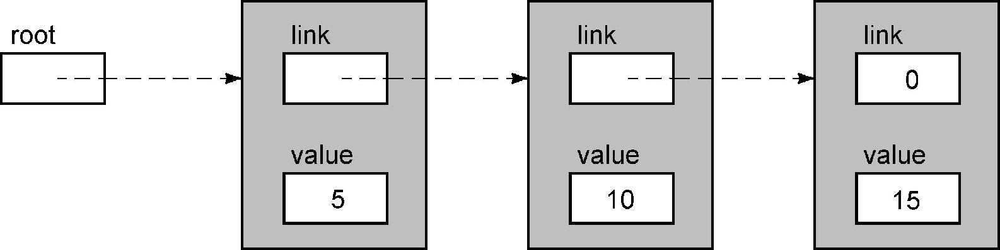
The nodes in this example are structures created with the following declaration.
typedef struct NODE {
struct NODE *link;
int value;
} Node;The data stored in each node is an integer. This list contains three nodes. If you begin at the root and follow the pointer to the first node, you can access the data stored in that node. Following the pointer in the first node takes you to the second node, where you can get its data. Finally, the next pointer brings you to the last node. The value zero is used to indicate a NULL pointer; here it means that there are no more nodes in the list.
In the diagram the nodes are shown as adjacent to display the logical ordering that the links provide. In fact, the nodes might actually be scattered all through memory. It doesn't make any difference to a program processing such a list whether the nodes are physically adjacent or not, because the program always uses the links to get from one node to the next.
A singly linked list can be traversed from start to end by following the links, but the list cannot be traversed backwards. In other words, once your program has reached the last node in the list, the only way to get back to any earlier node is to start again from the root pointer. Of course, the program could save a pointer to the current node before advancing to the next one, or it could even save pointers to the preceding few' nodes. However, these linked lists are dynamic and can grow to hold hundreds or thousands of nodes, so it is not feasible to save pointers to all of the preceding nodes in a list.
The nodes in this particular list are linked so that the data values are in ascending order. This ordering is important for some applications, such as organizing appointments by time of day. It is also possible to create an unordered list for applications that do not require any ordering.
How would we insert a new node into an ordered singly linked list? Suppose we had a new value, say 12, to insert into the previous list. Conceptually this task is easy: start at the beginning of the list, follow the pointers until you find the first node whose value is larger than 12, and then insert the new value into the list just before that node.
In practice the algorithm is more interesting. We traverse the list and stop when we reach the node containing 15, the first value greater than 12. We know that the new value should be added to the list just before this node, but the pointer field of the previous node must be modified to accomplish the insertion. However, we've passed this node, and we cannot go back. The solution is to always save a pointer to the previous node in the list.
We will now develop a function to insert a node into an ordered, singly linked list. Program 12.1 is our first attempt.
/*
** Insert into an ordered, singly linked list. The arguments are
** a pointer to the first node in the list, and the value to
** insert.
*/
#include <stdlib.h>
#include <stdio.h>
#include "sll_node.h"
#define FALSE 0
#define TRUE 1
int
sll_insert( Node *current, int new_value )
{
Node *previous;
Node *new;
/*
** Look for the right place by walking down the list
** until we reach a node whose value is greater than
** or equal to the new value.
*/
while( current->value < new_value ){
previous = current;
current = current->link;
}
/*
** Allocate a new node and store the new value into it.
** In this event, we return FALSE.
*/
new = (Node *)malloc( sizeof( Node ) );
if( new == NULL )
return FALSE;
new->value = new_value;
/*
** Insert the new node into the list, and return TRUE.
*/
new->link = current;
previous->link = new;
return TRUE;
}Program 12.1 Insert into an ordered, singly linked list: first try
insert1.c
We call the function in this manner:
result = sll_insert( root, 12 );Let's trace this code and see whether it correctly inserts the new value 12 into the list. First, the function is called with the value of the root variable, a pointer to the first node in the list. Here is the state of the list when the function begins:
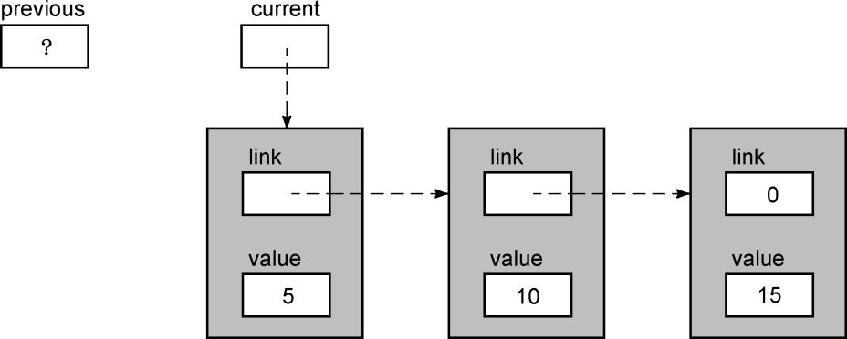
This diagram does not show the root variable because the function cannot access it. A copy of its value came into the function as the parameter current, but the function cannot access root. Now current->value is 5, which is less than 12, so the body of the loop is executed once. When we get back to the top of the loop, our pointers will have advanced.
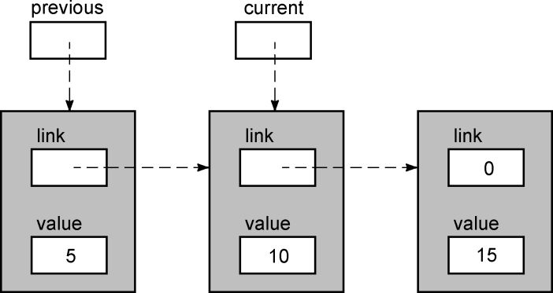
current->value is now 10, so the body of the loop executes again, with this result:
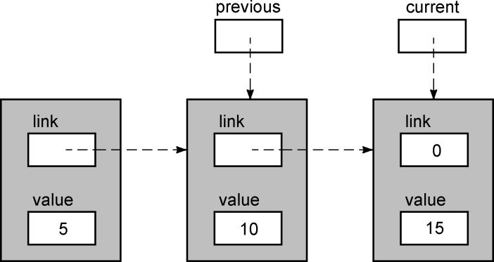
Now current->value is greater than 12 so the loop breaks.
At this point the previous pointer is the important one, because it points to the node that must be changed to insert the new value. But first, a new node must be obtained to hold the value. The next diagram shows the state of the list after the value is copied into the new node.
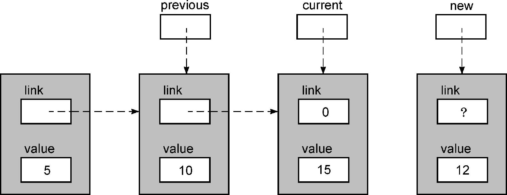
Linking the new node into the list requires two steps. First,
new->link = current;makes the new node point to what will be the next node in the list, the first one we found with a value larger than 12. After this step, the list looks like this:
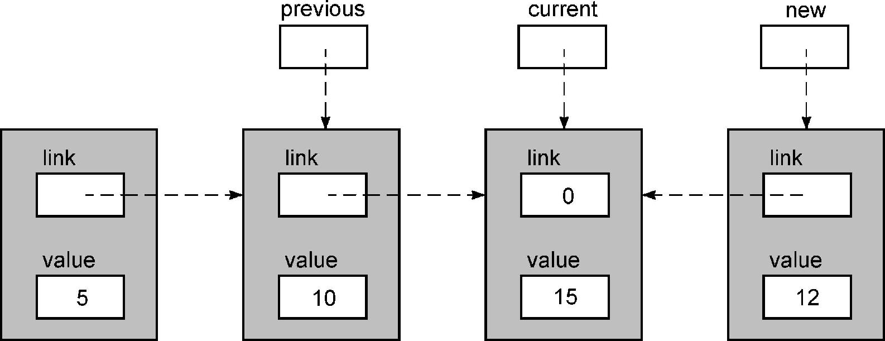
The second step is to make the previous node, the last one whose value was smaller than 12, point to the new node. The following statement performs this task.
previous->link = new;The result of this step is:
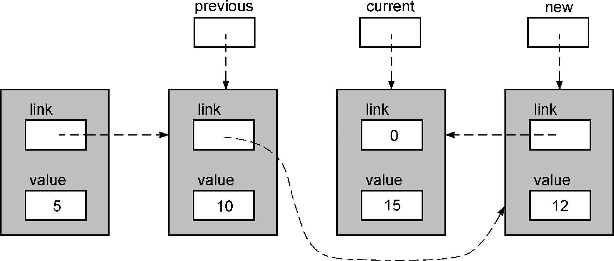
The function then returns, leaving the list looking like this:
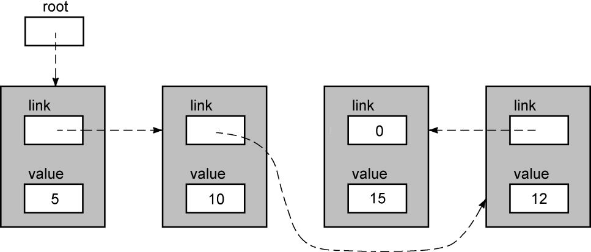
Starting at the root pointer and following the links verifies that the new node has been correctly inserted.
CAUTION!
Unfortunately, the insert function is incorrect. Try inserting the value 20 into the list and you will see one problem: the while loop runs off the end of the list and then applies indirection to a NULL pointer. To solve this problem, we must test current to make sure that it is not NULL before evaluating current->value:
while( current != NULL & current->value < value ){The next problem is tougher. Trace the function to insert the value 3 into the list. What happens?
In order to add a node to the beginning of the list, the function must change the root pointer. The function, however, cannot access the variable root. The easiest way to fix this problem is to just make root a global variable so that the insertion function can modify it. Unfortunately, this approach is also the worst way to fix the problem, because then the function works only for that one list.
The better solution is to pass a pointer to root as an argument. Then the function can use indirection both to obtain the value of root (the pointer to the first node of the list), and to store a new pointer into it. What is the type of this parameter? root is a pointer to a Node, so the parameter is of type Node **: a pointer to a pointer to a Node. The function in Program 12.2 contains these modifications. We must now call the function like this:
result = sll_insert( &root, 12 );
/*
** Insert into an ordered, singly linked list. The arguments are
** a pointer to the root pointer for the list, and the value to
** insert.
*/
#include <stdlib.h>
#include <stdio.h>
#include "sll_node.h"
#define FALSE 0
#define TRUE 1
int
sll_insert( Node **rootp, int new_value )
{
Node *current;
Node *previous;
Node *new;
/*
** Get the pointer to the first node.
*/
current = *rootp;
previous = NULL;
/*
** Look for the right place by walking down the list
** until we reach a node whose value is greater than
** or equal to the new value.
*/
while( current != NULL && current->value < new_value ){
previous = current;
current = current->link;
}
/*
** Allocate a new node and store the new value into it.
** In this event, we return FALSE.
*/
new = (Node *)malloc( sizeof( Node ) );
if( new == NULL )
return FALSE;
new->value = new_value;
/*
** Insert the new node into the list, and return TRUE.
*/
new->link = current;
if( previous == NULL )
*rootp = new;
else
previous->link = new;
return TRUE;
}Program 12.2 Insert into an ordered, singly linked list: second try
insert2.c
This second version contains some additional statements.
previous = NULL；is needed so that we can check later whether the new value will be the first node in the list.
current = *rootp;uses indirection on the root pointer argument to get the value of root, a pointer to the first node in the list. Finally
If (previous == NULL)
*rootp = new;
else
previous->link = new;was added to the end of the function. It checks whether the new value should be added to the beginning of the list. If so, we use indirection on the root pointer to make root point to the new node.
This function works, and in many languages it is as good as you can get. However, we can do better because C allows you to get the address of (a pointer to) existing objects.
It appears that inserting a node at the beginning of the list must be a special case. After all, the pointer that must be adjusted to insert the first node is the root pointer. For every other node, the pointer to be adjusted is the link field of the previous node. These seemingly different operations are really the same.
The key to eliminating the special case is to realize that every node in the list has a pointer somewhere pointing to it. For the first node, it is the root pointer, and for every other node it is the link field of the preceding node. The important point is that there is a pointer somewhere pointing to each node. Whether the pointer is or is not contained in a node is irrelevant.
Let's look at the list once more to clarify this point. Here is the first node and its corresponding pointer.
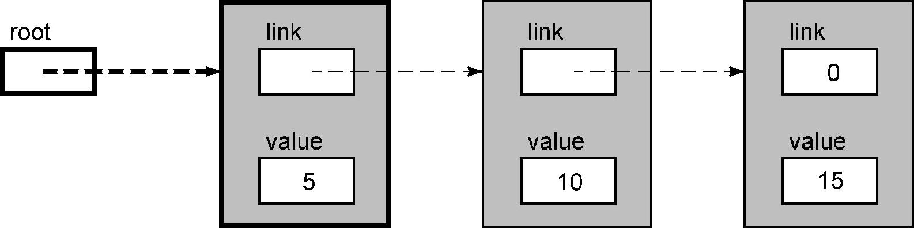
Si el nuevo valor se inserta antes del primer nodo, este puntero debe modificarse.
A continuación se muestra el segundo nodo y el puntero hacia él.
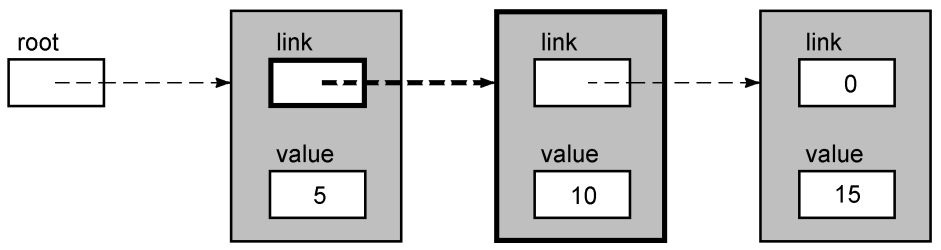
Si es necesario insertar el nuevo valor antes del segundo nodo, este puntero debe modificarse. Tenga en cuenta que solo consideramos el puntero a este nodo, y no importa qué nodo contenga este puntero. Este modo se puede aplicar a otros nodos de la lista vinculada.
Ahora echemos un vistazo a la función modificada (cuando comienza a ejecutarse). A continuación se muestran las condiciones de cada variable después de la primera declaración de asignación.
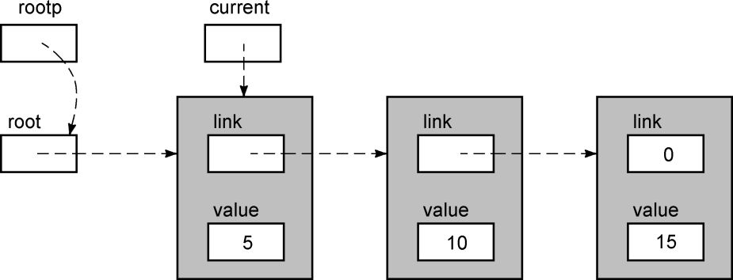
Tenemos un puntero al nodo actual y un puntero al campo de enlace del nodo actual. Aparte de eso, ¡no necesitamos nada más! Si el valor del nodo actual es mayor que el nuevo valor, entonces el puntero rootp nos dirá qué campo de vínculo debe modificarse para que el nuevo nodo se vincule a la lista vinculada. Si las inserciones en otras posiciones de la lista vinculada también se pueden expresar de la misma manera, no hay ningún caso especial mencionado anteriormente. La clave está en la relación puntero / nodo que vimos anteriormente.
Al pasar al siguiente nodo, guardamos un puntero al campo de enlace del siguiente nodo , en lugar de guardar un puntero al nodo anterior . Fácilmente podemos hacer un dibujo que describa esta situación.
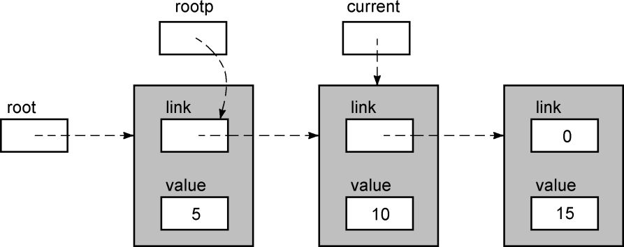
Tenga en cuenta que rootp aquí no apunta al nodo en sí, sino al campo de enlace dentro del nodo. Esta es la clave para simplificar la función de inserción, pero debemos poder obtener la dirección del campo de enlace del nodo actual. En C, esta operación es muy sencilla. La expresión & current-> link puede lograr este objetivo. El programa 12.3 es la versión final de nuestra función de inserción. El parámetro rootp ahora se llama linkp porque ahora apunta a un campo de enlace diferente, no solo al puntero raíz. Ya no necesitamos el puntero anterior, porque nuestro puntero de enlace puede ser responsable de encontrar el campo de enlace que necesita ser modificado. La última parte del código de la función anterior para manejar casos especiales también desapareció, porque siempre tenemos un puntero al campo de enlace que necesita ser modificado; modificamos la variable raíz exactamente de la misma manera que modificamos el campo de enlace del nodo . Finalmente, agregamos una declaración de registro a la variable de puntero de la función para mejorar la eficiencia del código resultante.
Agregamos un truco al bucle while en la versión final, que incorpora la asignación de current. El siguiente es un bucle con la misma función pero con una longitud un poco más larga.
/*
** Look for the right place.
*/
current = *linkp;
while( current !=NULL && current->value < value ){
linkp = ¤t->link;
current = * linkp;
}Al principio, actual se establece para apuntar al primer nodo de la lista vinculada. El ciclo while prueba si hemos llegado al final de la lista enlazada. En caso contrario, comprueba si hemos alcanzado la posición de inserción correcta. Si no es así, el cuerpo del bucle continúa ejecutándose y linkp se establece para que apunte al campo de enlace del nodo actual y el punto actual al siguiente nodo.
La última declaración del bucle es la misma que la declaración antes del bucle, lo que nos pide que la "simplifiquemos" incrustando la asignación de actual en la expresión while. El resultado es un bucle un poco más complejo pero más compacto, porque eliminamos la asignación redundante de corriente.
/*
** 插入到一个有序单链表。函数的参数是一个指向链表第一个节点的指针，以及一个需要插入的新值
*/
#include <stdlib.h>
#include <stdio.h>
#include "sll_node.h"
#define FALSE 0
#define TRUE 1
int
sll_insert( register Node **linkp, int new_value )
{
register Node *current;
register Node *new;
/*
** 寻找正确的插入位置，方法是按序访问链表，直到到达一个其值大于或等于
** 新值的节点。
*/
while( ( current = *linkp ) != NULL &&
current->value < new_value )
linkp = ¤t->link;
/*
** 为新节点分配内存，并把新值存储到新节点中，如果内存分配失败，
** 函数返回FALSE。
*/
new = (Node *)malloc( sizeof( Node ) );
if( new == NULL )
return FALSE;
new->value = new_value;
/*
** 在链表中插入新节点，并返回TRUE。
*/
new->link = current;
*linkp = new;
return TRUE;
}Procedimiento 12.3 Insertar en una lista ordenada con enlaces individuales: versión final
insert3.c
insinuación:
La eliminación de casos especiales simplifica esta función. Esta mejora es factible debido a dos factores. El primer factor es nuestra capacidad para explicar el problema correctamente. A menos que pueda resumir los puntos en común en operaciones aparentemente diferentes, solo puede escribir código adicional para manejar situaciones especiales. Normalmente, este tipo de conocimiento solo se puede adquirir después de haber aprendido la estructura de datos durante un tiempo y haberla comprendido mejor. El segundo factor es que el lenguaje C proporciona las herramientas adecuadas para ayudarlo a resumir los puntos en común del problema.
Esta función mejorada se basa en la capacidad de C para obtener la dirección de un objeto existente. Como muchas funciones del lenguaje C, esta habilidad es poderosa y peligrosa. Por ejemplo, no hay un operador de "dirección" en Modula y Pascal, por lo que la única fuente de punteros es la asignación de memoria dinámica. No hay forma de obtener un puntero a una variable normal o incluso un puntero a un campo de una estructura asignada dinámicamente. Las operaciones aritméticas no están permitidas en punteros y no hay forma de convertir un puntero de un tipo a un puntero de otro tipo por coerción. La ventaja de estas restricciones es que pueden evitar errores como "hacer referencia a elementos de matriz fuera de los límites" o "generar un puntero de un tipo pero que en realidad apunte a un objeto de otro tipo".
advertir:
C tiene muchas menos restricciones de puntero, por lo que podemos mejorar la función de inserción. Por otro lado, los programadores de C deben tener cuidado al usar punteros para evitar errores. La filosofía de puntero del lenguaje Pascal es algo similar a la siguiente declaración: "Usar un martillo puede lastimarte, así que no te damos un martillo". La filosofía de puntero del lenguaje C es: "Te da un martillo, en De hecho, puede usar varios tipos de martillo. ¡Buena suerte! ”Con esta habilidad, los programadores de C tienen más probabilidades de meterse en problemas que los programadores de Pascal, pero los buenos programadores de C pueden producir productos más pequeños y eficientes que sus contrapartes de Pascal y Modula. Código con mejor mantenibilidad. Esta es una de las razones por las que el lenguaje C es tan popular en la industria y por qué los programadores C experimentados son tan populares.
Para que la lista enlazada individual sea más útil, necesitamos agregar más operaciones, como buscar y eliminar. Sin embargo, los algoritmos utilizados para estas operaciones son muy sencillos y fáciles de implementar utilizando las técnicas ilustradas por la función de inserción. Por tanto, dejo estas funciones a modo de ejercicio.
La alternativa a las listas enlazadas individualmente son las listas doblemente enlazadas. En una lista doblemente enlazada, cada nodo contiene dos punteros: un puntero al nodo anterior y un puntero al siguiente. Esto nos permite recorrer la lista doblemente enlazada en cualquier dirección, e incluso acceder a la lista doblemente enlazada. La siguiente figura muestra una lista doblemente enlazada.
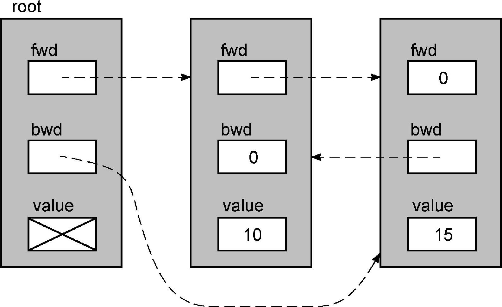
La siguiente es la declaración del tipo de nodo.
typedf struct NODE {
struct NODE *fwd;
struct NODE *bwd;
int value;
} Node;Ahora, hay dos punteros raíz: uno apunta al primer nodo de la lista vinculada y el otro apunta al último nodo. Estos dos punteros nos permiten recorrer la lista vinculada desde cualquier extremo de la lista vinculada.
Es posible que deseemos declarar los dos punteros raíz como dos variables por separado. Pero esto es lo mismo, debemos pasar ambos punteros a la función de inserción. Es más conveniente declarar un nodo completo para el puntero raíz, pero su campo de valor nunca se utilizará. En nuestro caso, esta técnica solo desperdicia el espacio de memoria de un valor entero. Para listas vinculadas con campos de valor muy grandes, puede ser mejor declarar los dos punteros por separado. Además, también podemos guardar alguna otra información sobre la lista vinculada en el campo de valor del nodo raíz, como el número de nodos que contiene actualmente la lista vinculada.
El campo fwd del nodo raíz apunta al primer nodo de la lista vinculada y el campo bwd del nodo raíz apunta al último nodo de la lista vinculada. Si la lista vinculada está vacía, ambos campos son NULL. El campo bwd del primer nodo y el campo rwd del último nodo de la lista vinculada son ambos NULL. En una lista enlazada ordenada, cada nodo se organizará en orden ascendente de acuerdo con el valor del campo de valor.
Esta vez, vamos a escribir una función para insertar un valor en una lista ordenada de doble enlace. La función dll_insert acepta dos parámetros: un puntero al nodo raíz y un valor entero.
La función de inserción de lista enlazada individual que escribimos anteriormente agrega valores repetidos a la lista enlazada. En algunas aplicaciones, puede ser más apropiado no insertar valores duplicados. La función dll_insert solo inserta el valor que se va a insertar cuando no existe en la lista vinculada.
Escribamos esta función de una manera más estandarizada. Cuando insertamos un nodo en una lista vinculada, pueden ocurrir cuatro situaciones:
1. Es posible que el nuevo valor deba insertarse en el medio de la lista vinculada.
2. Es posible que el nuevo valor deba insertarse al principio de la lista vinculada.
3. Es posible que el nuevo valor deba insertarse al final de la lista vinculada.
4. Es posible que el nuevo valor deba insertarse al principio de la lista vinculada y al final de la lista vinculada (es decir, la lista vinculada original está vacía).
En cada caso, se deben modificar 4 punteros.
Si cree que estas descripciones no son muy claras, la implementación concisa del Procedimiento 12.4 puede ayudarlo a profundizar su comprensión.
/*
** 把一个值插入到一个双链表，rootp是一个指向根节点的指针，
** value是欲插入的新值。
** 返回值：如果欲插值原先已存在于链表中，函数返回0；
** 如果内存不足导致无法插入，函数返回-1；如果插入成功，函数返回1。
*/
#include <stdlib.h>
#include <stdio.h>
#include "doubly_linked_list_node.h"
int
dll_insert( Node *rootp, int value )
{
Node *this;
Node *next;
Node *newnode;
/*
** 查看value是否已经存在于链表中，如果是就返回。
** 否则，为新值创建一个新节点（"newnode"将指向它）。
** "this"将指向应该在新节点之前的那个节点，
** "next"将指向应该在新节点之后的那个节点。
*/
for( this = rootp; (next = this->fwd) != NULL; this = next ){
if( next->value == value )
return 0;
if( next->value > value )
break;
}
newnode = (Node *)malloc( sizeof( Node ) );
if( newnode == NULL )
return -1;
newnode->value = value;
/*
** 把新值添加到链表中。
*/
if( next != NULL ){
/*
** 情况1或2: 并非位于链表尾部。
*/
if( this != rootp ){ /* 情况1: 并非位于链表起始位置 */
newnode->fwd = next;
this->fwd = newnode;
newnode->bwd = this;
next->bwd = newnode;
}
else { /* 情况2: 位于链表起始位置 */
newnode->fwd = next;
rootp->fwd = newnode;
newnode->bwd = NULL;
next->bwd = newnode;
}
}
else {
/*
** 情况3或4: 位于链表的尾部。
*/
if( this != rootp ){ /* 情况3: 并非位于链表的起始位置 */
newnode->fwd = NULL;
this->fwd = newnode;
newnode->bwd = this;
rootp->bwd = newnode;
}
else { /* 情况4: 位于链表的起始位置 */
newnode->fwd = NULL;
rootp->fwd = newnode;
newnode->bwd = NULL;
rootp->bwd = newnode;
}
}
return 1;
}Procedimiento 12.4 Función de inserción de lista concisa de doble enlace
dll_ins1.c
Al principio, la función señala este punto al nodo raíz. El siguiente puntero siempre apunta al nodo después de este. La idea es que estos dos punteros avancen sincrónicamente hasta que se inserte un nuevo nodo entre los dos. El bucle for comprueba el valor del nodo al que apunta next para determinar si ha alcanzado la posición que debe insertarse.
Si se encuentra un nuevo valor en la lista vinculada, la función simplemente regresa. De lo contrario, el bucle termina cuando llega al final de la lista vinculada o encuentra una posición de inserción adecuada. En cualquier caso, el nuevo nodo debe insertarse después del nodo al que apunta este. Tenga en cuenta que no asignamos memoria para el nuevo valor antes de decidir si realmente debería insertarse en la lista vinculada. Si se asigna memoria por adelantado, si se encuentra que el nuevo valor ya existe en la lista vinculada, puede ocurrir una pérdida de memoria.
Las cuatro situaciones se implementan por separado. Observemos el caso 1 insertando 12 en la lista vinculada. La siguiente figura muestra el estado de varias variables después de que termina el ciclo for.
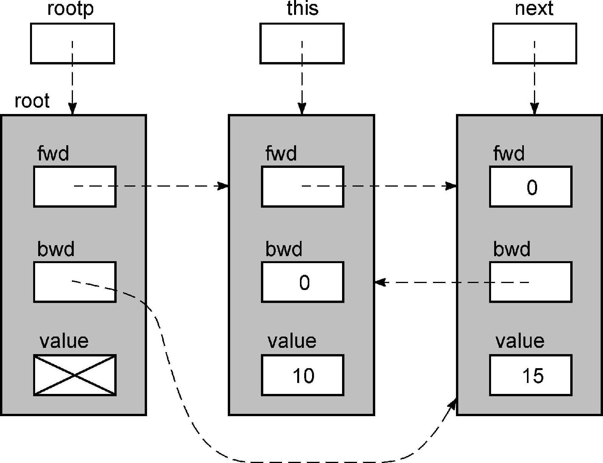
Luego, la función asigna memoria para el nuevo nodo. Después de ejecutar las siguientes declaraciones,
newnode->fwd = next;
this->fwd = newnode;La lista vinculada se ve así:
Luego, ejecute la siguiente declaración:
newnode->bwd = this;
next->bwd = newnode;Esto completa el proceso de insertar el nuevo valor en la lista vinculada:
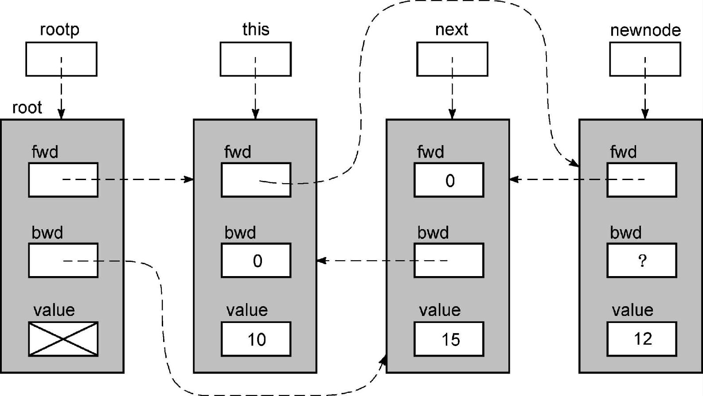
Estudie el código para determinar cómo manejar los casos restantes y asegúrese de que todos funcionen correctamente.
insinuación:
Los programadores cuidadosos notarán que hay muchas similitudes en los grupos de instrucciones if anidados en la función, y los buenos programadores se aburrirán con tanto código repetitivo en el programa. Entonces, ahora usaremos dos técnicas para eliminar estos códigos duplicados. La primera técnica es la factorización de declaraciones, como se muestra en el siguiente ejemplo:
if( x == 3) {
i = 1;
something;
j = 2;
}
else {
i = 1;
something different;
j = 2;
}Tenga en cuenta que independientemente de si el valor de la expresión x = = 3 es verdadero o falso, se ejecutarán las declaraciones i = 1 y j = 2. Ejecutar i = 1 antes de if no afectará el resultado de la prueba de x == 3, por lo que ambas declaraciones se pueden extraer, lo que resulta en una declaración más simple pero igualmente completa:
i = 1；
if( x == 3 )
something;
else
something different;
j = 2;advertir:
Si la declaración antes de si afectará el resultado de la prueba, no la extraiga. Por ejemplo, en el siguiente ejemplo:
if( x == 3 ){
x = 0;
something;
}
else {
x = 0;
something different;
}La declaración x = 0 no se puede refinar porque afectará el resultado de la comparación.
Refinando la instrucción if anidada más interna del programa 12.4 produce el segmento de código del programa 12.5. Compare este código con la función anterior y confirme que son equivalentes.
/*
** 把新节点添加到链表中。
*/
if( next != NULL ){
/*
** 情况1或2: 并非位于链表的尾部。
*/
newnode->fwd = next;
if( this != rootp ){ /* 情况1: 并非位于链表起始位置 */
this->fwd = newnode;
newnode->bwd = this;
}
else { /* 情况2: 位于链表起始位置 */
rootp->fwd = newnode;
newnode->bwd = NULL;
}
next->bwd = newnode;
}
else {
/*
** 情况3或4: 位于链表尾部。
*/
newnode->fwd = NULL;
if( this != rootp ){ /* 情况3: 并不位于链表起始位置 */
this->fwd = newnode;
newnode->bwd = this;
}
else { /* 情况4: 位于链表起始位置 */
rootp->fwd = newnode;
newnode->bwd = NULL;
}
rootp->bwd = newnode;
}Procedimiento 12.5 Refinamiento de la lógica de inserción para lista doblemente enlazada
dll_ins2.c
La segunda técnica de simplificación es fácil de ilustrar con el siguiente ejemplo:
if( pointer !=NULL )
field = pointer;
else
fileld = NULL;La intención de este código es establecer una variable igual al puntero. Si el puntero no apunta a nada, la variable se establece en NULL. Sin embargo, mire la siguiente declaración:
field = pointer;Si el valor del puntero no es NULL, el campo obtiene una copia de su valor como antes. Sin embargo, si el valor del puntero es NULL, el campo obtendrá una copia de NULL del puntero, lo que tiene el mismo efecto que asignarlo a la constante NULL. Esta instrucción realiza la misma tarea que la instrucción if anterior, pero es significativamente más simple.
La clave para usar esta técnica en el programa 12.5 es encontrar aquellas declaraciones que se ven diferentes pero en realidad realizan la misma tarea, y luego reescribirlas y escribirlas en la misma forma. Podemos reescribir la primera oración del caso 3 y el caso 4 como:
newnode->fwd = next;Porque la sentencia if acaba de determinar que next == NULL. Este cambio hace que la primera declaración en ambos lados de la declaración if sea igual, por lo que podemos extraerla. Realice esta modificación y estudie el código restante.
¿Lo descubriste? Ahora las dos declaraciones if anidadas son iguales, por lo que también se pueden extraer. Los resultados de estos cambios se muestran en el Procedimiento 12.6.
También podemos mejorar aún más el código. La primera declaración de la cláusula else de la primera declaración if se puede reescribir como:
this->fwd = newnode;Esto se debe a que la instrucción if ya ha determinado este == rootp. Ahora, esta oración reescrita y sus equivalentes también se pueden extraer.
El programa 12.7 es una versión completa con todas las modificaciones. La tarea que realiza es la misma que la función original, pero el volumen es mucho menor. El puntero local se declara como una variable de registro, lo que mejora aún más el tamaño y la velocidad del código.
/*
** 把新节点添加到链表中。
*/
newnode->fwd = next;
if( this != rootp ){
this->fwd = newnode;
newnode->bwd = this;
}
else {
rootp->fwd = newnode;
newnode->bwd = NULL;
}
if( next != NULL )
next->bwd = newnode;
else
rootp->bwd = newnode;Procedimiento 12.6 Refinamiento adicional de la lógica de inserción de la lista doblemente enlazada
dll_ins3.c
/*
** 把一个新值插入到一个双链表中。rootp是一个指向根节点的指针，
** value是需要插入的新值。
** 返回值：如果链表原先已经存在这个值，函数返回0。
** 如果为新值分配内存失败，函数返回-1。
** 如果新值成功地插入到链表中，函数返回1。
*/
#include <stdlib.h>
#include <stdio.h>
#include "doubly_liked_list_node.h"
int
dll_insert( register Node *rootp, int value )
{
register Node *this;
register Node *next;
register Node *newnode;
/*
** 查看value是否已经存在于链表中，如果是就返回。
** 否则，为新值创建一个新节点（"newnode"将指向它）。
** "this"将指向应该在新节点之前的那个节点，
** "next"将指向应该在新节点之后的那个节点。
*/
for( this = rootp; (next = this->fwd) != NULL; this = next ){
if( next->value == value )
return 0;
if( next->value > value )
break;
}
newnode = (Node *)malloc( sizeof( Node ) );
if( newnode == NULL )
return -1;
newnode->value = value;
/*
** 把新节点添加到链表中。
*/
newnode->fwd = next;
this->fwd = newnode;
if( this != rootp )
newnode->bwd = this;
else
newnode->bwd = NULL;
if( next != NULL )
next->bwd = newnode;
else
rootp->bwd = newnode;
return 1;
}Procedimiento 12.7 La versión final simplificada de la función de inserción de lista doblemente enlazada
dll_ins4.c
Esta función no se puede mejorar mucho, pero podemos hacer que el código fuente sea más pequeño. El propósito de la primera instrucción if es determinar el valor en el lado derecho de la instrucción de asignación. Podemos reemplazar la declaración if con una expresión condicional. También podemos reemplazar la segunda declaración if con una expresión condicional, pero la importancia de esta modificación no es muy grande.
insinuación:
El código para el programa 12.8 es más pequeño, pero ¿es realmente mejor? Aunque se ha reducido el número de sentencias, las operaciones de comparación y asignación que se deben realizar siguen siendo las mismas que las anteriores, por lo que este código no corre más rápido que los anteriores. Aquí hay dos diferencias menores: newnode-> bwd y -> bwd = newnode se escriben solo una vez en lugar de dos. ¿Pueden estas diferencias resultar en un código de destino más pequeño? Tal vez lo haga Depende de las medidas de optimización de su compilador. Sin embargo, incluso si produce un código más pequeño, la diferencia es muy pequeña, pero la legibilidad de este código es menor que el código anterior, especialmente para aquellos programadores C inexpertos. Por lo tanto, el programa 12.8 puede ser más difícil de mantener.
Si el tamaño o la velocidad de ejecución del programa es realmente importante, es posible que debamos considerar escribir funciones en lenguaje ensamblador. Pero incluso con un cambio tan grande en la codificación, no hay garantía de que haya mejoras importantes. También considere que el código ensamblador es difícil de escribir, difícil de leer y difícil de mantener. Por lo tanto, solo cuando no tenemos otra alternativa, podemos usar el lenguaje ensamblador.
/*
** 把新节点添加到链表中。
*/
newnode->fwd = next;
this->fwd = newnode;
newnode->bwd = this != rootp ? this : NULL;
( next != NULL ? next : rootp )->bwd = newnode;Procedimiento 12.8 Usar expresiones condicionales para implementar funciones de inserción
dll_ins5.c
Al igual que las listas con enlaces simples, las listas con enlaces dobles requieren más operaciones. Los ejercicios de programación de este capítulo le brindarán más oportunidades prácticas para escribirlos.
Una lista enlazada es una estructura de datos que utiliza punteros para almacenar valores. Cada nodo de la lista vinculada contiene un campo que apunta al siguiente nodo de la lista vinculada. Además, un puntero de raíz independiente apunta al primer nodo de la lista vinculada. Dado que a los nodos se les asigna memoria dinámicamente cuando se crean, pueden distribuirse en la memoria. Sin embargo, atravesar la lista vinculada se basa en punteros, por lo que la disposición física de los nodos no importa. Una lista enlazada individualmente solo se puede recorrer en una dirección.
Para insertar un nuevo valor en una lista enlazada individual ordenada, primero debe encontrar la posición de inserción apropiada en la lista enlazada. Para listas no ordenadas enlazadas individualmente, se pueden insertar nuevos valores en cualquier posición. Vincular un nuevo nodo a la lista vinculada requiere dos pasos. Primero, el campo de enlace del nuevo nodo debe establecerse para que apunte a su nodo subsiguiente de destino. En segundo lugar, el campo de enlace del nodo anterior debe configurarse para apuntar a este nuevo nodo. En muchos otros idiomas, la función de inserción guarda un puntero al nodo anterior para completar el segundo paso. Sin embargo, esta técnica hace que la inserción en la posición inicial de la lista vinculada sea un caso especial que debe manejarse por separado. En lenguaje C, puede eliminar esta situación especial guardando un puntero al campo de enlace que debe modificarse en lugar de guardar un puntero al nodo anterior.
Cada nodo de la lista de enlace doble contiene dos campos de enlace: uno de ellos apunta al siguiente nodo de la lista enlazada y el otro apunta al nodo anterior de la lista enlazada. La lista de doble enlace tiene dos punteros raíz, que apuntan al primer nodo y al último nodo respectivamente. Por lo tanto, el recorrido de la lista de doble enlace puede comenzar desde cualquier extremo y la dirección se puede cambiar durante el recorrido. Para insertar un nuevo nodo en la lista doblemente enlazada, debemos modificar 4 punteros. Los campos de enlace hacia adelante y hacia atrás del nuevo nodo deben establecerse, y el campo de enlace hacia atrás del nodo anterior y el campo de enlace hacia adelante del siguiente nodo también deben modificarse para que apunten a este nuevo nodo.
El refinamiento de oraciones es una técnica para simplificar el programa eliminando declaraciones redundantes en el programa. Si las cláusulas "then" y "else" de una instrucción if terminan en la misma secuencia de declaraciones, se pueden reemplazar por una sola copia que aparece después de la instrucción if. Las declaraciones en la misma secuencia también se pueden extraer de la posición inicial de la instrucción if, pero este refinamiento no puede cambiar el resultado de la prueba de if. Si diferentes declaraciones realmente realizan la misma función, puede escribirlas de la misma manera y luego usar el refinamiento de declaraciones para simplificar el programa.
1. Queda atrás del final de la lista vinculada.
2. Tenga cuidado al usar punteros, porque C no proporciona una red de seguridad para su uso.
3. Refinar las declaraciones de las declaraciones if puede cambiar los resultados de la prueba.
1. La eliminación de casos especiales facilita el mantenimiento del código.
2. Elimine las declaraciones repetidas en la declaración if refinando la declaración.
3. No se limite a evaluar la calidad del código en función de su tamaño.
1. ¿Se puede reescribir el programa 12.3 sin usar la variable actual? Si puede, compare su respuesta con la función original.
 2. Algunos libros de texto sobre estructura de
datos sugieren el uso de "nodos principales" en listas enlazadas individualmente. Este nodo ficticio es siempre el
primer elemento de la lista vinculada, lo que elimina el caso especial de insertar al principio de la lista
vinculada. Analice los pros y los contras de esta técnica.
2. Algunos libros de texto sobre estructura de
datos sugieren el uso de "nodos principales" en listas enlazadas individualmente. Este nodo ficticio es siempre el
primer elemento de la lista vinculada, lo que elimina el caso especial de insertar al principio de la lista
vinculada. Analice los pros y los contras de esta técnica.
3. En el programa 12.3, ¿dónde inserta la función de inserción el valor repetido? ¿Cuál será el efecto si el operador de comparación se cambia de <a <=?
4. Analice algunas técnicas, cómo omitir el
campo de valor del nodo raíz en la lista de doble enlace.
5. ¿Qué pasará si la llamada a malloc en el programa 12.7 se ejecuta al comienzo de la función?
6. ¿Se puede ordenar una lista desordenada enlazada individualmente?
7. La lista de índice (lista de concordancia)
es una especie de lista enlazada por letras, los nodos de la lista son las palabras que aparecen en un libro o un
artículo. Puede utilizar una lista ordenada de cadenas de un solo enlace para implementar una tabla de índice y no
insertar palabras repetidas cuando utilice la función de inserción. El problema con este método de implementación es
que el tiempo para buscar en la lista vinculada aumentará drásticamente a medida que se expanda la escala de la
lista vinculada.
La figura 12.1 ilustra otra estructura de datos para almacenar una tabla de índice. La idea es descomponer una gran lista enlazada en 26 pequeñas listas enlazadas; todas las palabras de cada lista enlazada comienzan con la misma letra. Inicialmente, cada nodo de la lista enlazada contiene una letra y un puntero a una lista enlazada individual ordenada (almacenada como una cadena) de palabras que comienzan con esa letra.
Con esta estructura de datos, ¿hay algún cambio en el tiempo dedicado a buscar una palabra específica en comparación con el uso de una lista enlazada de todas las palabras?
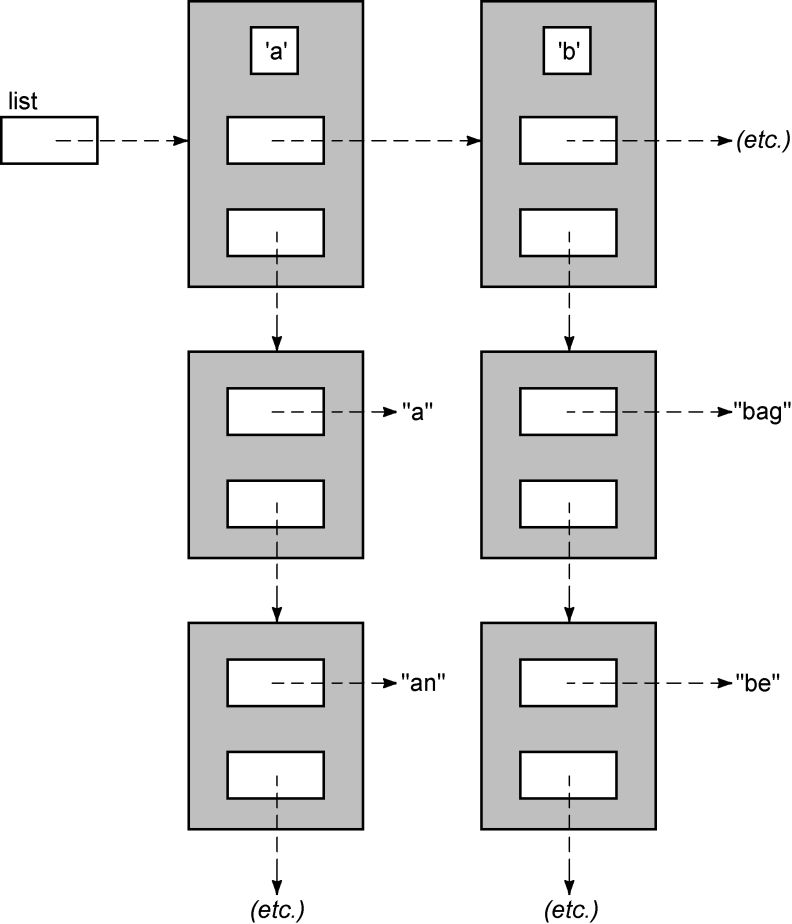
Figura 12.1 Una tabla de índice
★ 1. Escriba una función para contar el número
de nodos en una lista enlazada individualmente. Su único parámetro es un puntero al primer nodo de la lista
vinculada. ¿Qué información debe saber al escribir esta función? ¿Se puede utilizar esta función para realizar otras
tareas?
★ 2. Escriba una función que busque un valor específico en una lista enlazada individualmente desordenada y devuelva un puntero a ese nodo. Puede asumir que la estructura de datos del nodo está definida en el archivo de encabezado single_linked_list_node.h.
Si desea que esta función sea adecuada para una lista enlazada individualmente ordenada, ¿necesita hacer algunos cambios?
★★★ 3. Vuelva a escribir la función dll_insert del programa 12.7 para que los punteros de cabeza y cola se pasen a la función como un puntero separado, en lugar de ser parte de un nodo. En términos de lógica funcional, ¿cuál es el efecto de este cambio?
★★★★ 4. Escriba una función para organizar todos los nodos de una lista enlazada individualmente en orden inverso. La función debe tener el siguiente prototipo:
struct NODE * sll_reverse( struct NODE *first);Declare la estructura de datos del nodo en el archivo de encabezado singly_linked_list_node.h.
El parámetro de la función apunta al primer nodo de la lista vinculada. Cuando se reorganiza la lista vinculada, la función devuelve un puntero al nuevo nodo principal de la lista vinculada. El valor del campo de vínculo del último nodo de la lista vinculada debe establecerse en NULL, y la ejecución de esta función en una lista vinculada vacía (primero == NULL) devolverá NULL.
★★★ 5. Escriba un programa para eliminar un
nodo de una lista enlazada individualmente. El prototipo de la función debería ser el siguiente:
int sll_remove( struct NODE **rootp, struct NODE *node );Puede asumir que la estructura de datos del nodo está definida en el archivo de encabezado single_linked_list_node.h. El primer parámetro de la función es un puntero al puntero raíz de la lista vinculada y el segundo parámetro es un puntero al nodo que se eliminará. Si la lista vinculada no contiene el nodo que se va a eliminar, la función devuelve falso; de lo contrario, elimina el nodo y devuelve verdadero. ¿Cuáles son las ventajas de pasar un puntero al nodo que se eliminará en lugar del valor del nodo que se eliminará como parámetro de la función?
★★★ 6. Escriba un programa para eliminar un nodo de una lista doblemente enlazada. El prototipo de la función debería ser el siguiente:
int dll_remove( struct NODE *rootp, struct NODE *node );Puede asumir que la estructura de datos del nodo está definida en el archivo de encabezado Doubly_linked_list_node.h. El primer parámetro de la función es un puntero al nodo que contiene el puntero raíz de la lista vinculada (igual que el programa 12.7), y el segundo parámetro es un puntero al nodo que se eliminará. Si la lista vinculada no contiene el nodo que se va a eliminar, la función devuelve falso; de lo contrario, la función elimina el nodo y devuelve verdadero.
★★★★★ 7. Escriba una función para insertar una nueva palabra en la tabla de índice descrita en la pregunta 7. La función acepta dos parámetros, un puntero al puntero de la lista y una cadena. Se supone que la cadena contiene una sola palabra. Si la palabra no existe en la tabla de índice, debe copiarse en un nodo asignado dinámicamente e insertarse en la tabla de índice. Si la cadena se inserta correctamente, la función debería devolver verdadero. Si la cadena ya existe en la tabla de índice, o la cadena no comienza con una letra, u ocurren otros errores, la función devuelve falso.
La función debe mantener una lista enlazada de primer nivel y los nodos están ordenados alfabéticamente. Las restantes listas secundarias vinculadas se organizan en orden de palabras.